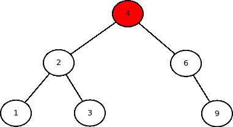
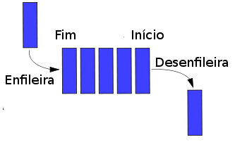
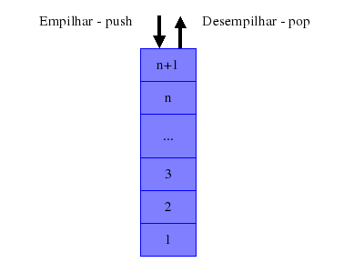

<!DOCTYPE html>
<html lang="pt-br"></html>
<html>
<head>
    <style>
   /* Estilos para o menu-lateral */
#menu-lateral {
    width: 250px;
    height: 100%;
    position: fixed;
    top: 0;
    left: 0;
    background-color: #333;
    color: #fff;
    padding: 20px;
    border-top-right-radius: 15px;
    border-bottom-right-radius: 15px;
    box-shadow: 2px 0 5px rgba(0, 0, 0, 0.2);
    display: flex;
    flex-direction: column; /* Empilhar itens verticalmente */
}

#menu-lateral h2 {
    font-size: 24px;
    margin-bottom: 20px;
}

#menu-lateral ul {
    list-style: none; /* Remover marcadores de lista padrão */
    padding: 0;
    margin: 0;
}

#menu-lateral li {
    margin: 10px 0;
}

#menu-lateral a {
    display: block;
    color: #fff;
    text-decoration: none;
    font-size: 18px;
    padding: 10px;
    border-radius: 5px;
    transition: background-color 0.3s, color 0.3s; /* Transição suave de cores */
}

#menu-lateral a:hover {
    background-color: #555;
    color: #fff;
}

/* Estilos adicionais para o menu-lateral */
#menu-lateral h2 {
    font-size: 30px;
}

#menu-lateral a {
    font-size: 20px;
}

/* Ícone para o menu (pode usar um ícone de menu personalizado) */
#menu-toggle {
    display: none;
    cursor: pointer;
    font-size: 24px;
    margin-left: 10px;
}

/* Estilos para o conteúdo principal */
#conteudo {
    height: 100%;
    margin-left: 270px;
    padding: 20px;
    transition: margin-left 0.3s; /* Adicionar uma transição suave de margem esquerda */
}

/* Estilos para quando o menu estiver recolhido */
.menu-recolhido #menu-lateral {
    width: 50px;
    text-align: center;
}

.menu-recolhido #menu-lateral h2 {
    display: none;
}

.menu-recolhido #menu-lateral a {
    padding: 10px 5px;
    text-align: center;
    font-size: 14px;
}
#conteudo a {
    color: #0077b6; /* Define a cor do texto */
    text-decoration: none; /* Remove sublinhado padrão */
    font-size: 30px; /* Define o tamanho da fonte */
    font-family: 'Roboto', sans-serif; /* Define a família da fonte */
    font-weight: bold; /* Define o peso da fonte (negrito) */
}

/* Seletor para âncoras no conteúdo quando o mouse passa por cima */
#conteudo a:hover {
    color: #00a896; /* Altera a cor do texto quando o mouse passa por cima */
    text-decoration: underline; /* Adiciona um sublinhado ao passar o mouse */
}
.menu-recolhido #conteudo {
    margin-left: 70px;
}

.conteudo-item {
    display: flex;
    align-items: center;
    justify-content: center;
    flex-direction: column;
    text-align: center;
}

    </style>
<script>
    document.addEventListener("DOMContentLoaded", function () {
        const menuLateral = document.getElementById("menu-lateral");
        const conteudo = document.getElementById("conteudo");
        const menuToggle = document.createElement("div");
        menuToggle.id = "menu-toggle";
        menuToggle.innerHTML = "&#9776;"; // Ícone de menu (pode ser personalizado)

        menuToggle.addEventListener("click", function () {
            menuLateral.classList.toggle("menu-recolhido");
            conteudo.classList.toggle("menu-recolhido");
        });

        menuLateral.appendChild(menuToggle);
    });
</script>

</head>
<body>
    <div id="menu-lateral">
        <h2 style = "color:rgb(255, 255, 255); font-size: 30px;">Menu</h2>
        <ul>
            <li><a href="./ArvoreBin/ArvoreBinaria.html">Árvore Binária</a></li>
            <li><a href="./Filas/Filas.html">Filas</a></li>
            <li><a href="./Pilhas/Pilhas.html">Pilhas</a></li>
        </ul>
    </div>

    <div id="conteudo">
        <h1>Projeto 2 - Estrutura de Dados</h1>

        <!-- Conteúdo da Árvore Binária --> 
        <section id="arvore-binaria" class="conteudo-item">
            <h2><a href="./ArvoreBin/ArvoreBinaria.html">Árvore Binária de Pesquisa</a></h2>
            <div id="container-arvore">
                
                <div id="arvore" style="position: relative;"></div>
            </div>
            <link rel="stylesheet" type="text/css" href="./ArvoreBin/ArvoreBinaria.css">
            <script src="./ArvoreBin/no.js"></script>
        </section>
        
        <!-- Conteúdo de Filas -->
        <section id="filas" class="conteudo-item">
            <h2><a href="./Filas/Filas.html">Filas Sequenciais</a></h2>
            <div id="container-pilhas">
                
                <div id="Filas" style="position: relative;"></div>
            </div>
            <link rel="stylesheet" type="text/css" href="./Pilhas/Pilhas.css">
            <script src="./Filas/filas.js"></script>
        </section>
        
        <!-- Conteúdo de Pilhas -->
        <section id="pilhas" class="conteudo-item">
            <h2><a href="./Pilhas/Pilhas.html">Pilhas Sequenciais</a></h2>
            <div id="container-pilhas">
                
                <div id="pilhas" style="position: relative;"></div>
            </div>
            <link rel="stylesheet" type="text/css" href="./Pilhas/Pilhas.css">
            <script src="./Pilhas/pilhas.js"></script>
        </section>
    </div>
</body>
</html> 